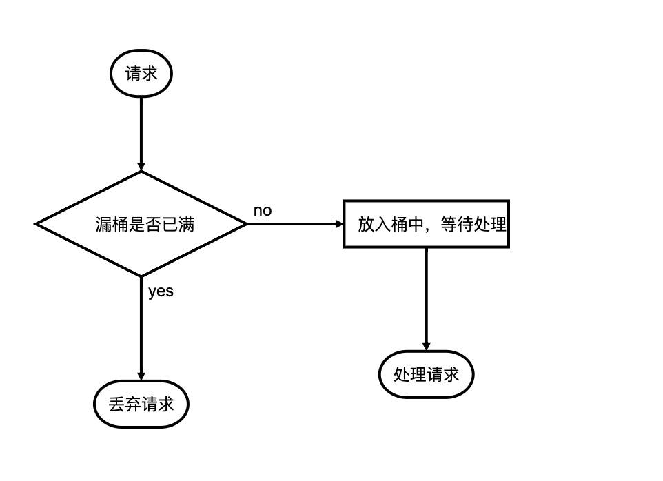
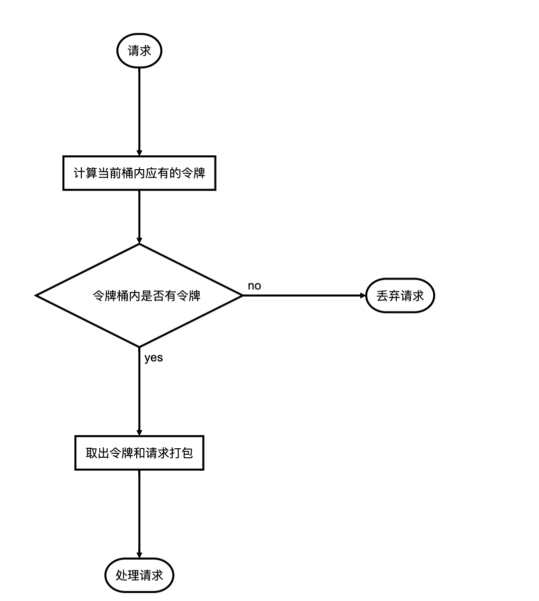

网站限流
随着网站用户规模的增加,业务的扩张, 我们网站所承受的流量规模和并发数也会不断增加
到了一定时候我们就会希望可以对网站的流量进行一定程度的控制,因为我们的业务处理能力是有限的,我们需要优先保证关键业务的正常运转
技术人员一直以来都在致力于可以彻底的解决高并发问题,但是到目前为止也没有一种可以彻底解决的方案
我们只能尽量的提升业务处理的性能,做业务拆分,分布式,进行错峰处理等手段
其实我们可以从一整个用户请求的过程中的每个阶段进行分析, 在不同的阶段采用不同的方案
在用户请求刚刚进入的时候进行限流处理就是一种十分有效的手段
限流
限流就是从用户访问出限制用户的请求,常用于秒杀等并发量极高的场景之下
限流的核心思想就是人为的丢弃一部分用户请求, 不作处理, 这样相当于从最根源处就避免的用户后续的操作,虽然对用户体验来说影响非常大, 但是只要采用合适的丢弃策略,就能在有效保护系统的同时,尽量减少对用户体验的影响
漏桶算法
漏桶算法就是一种有效的限流算法,顾名思义,就是像漏桶一样以固定的速率将用户请求控制在一个确定的范围之内
漏桶有两个关键属性,一个是漏桶的大小(最大存储的请求容量),另一个是漏桶的开口(处理请求的速率)
用户的请求过来之后可以认为会被放到一个漏桶内,然后桶本身以一定的速率处理请求,当用户的请求速率过快,桶内的请求数量过多就会造成请求溢出,这部分请求就会被视为无效的请求
特点: 根据时间以固定速率允许请求通过
缺点: 针对部分由突发场景的效率有点低
流程图:

令牌桶算法
另一种常用的限流算法叫令牌桶算法,令牌桶的思想跟漏桶有点不大一样,令牌桶是先假设了一个桶, 桶内装有令牌(token),系统以一定的时间往桶里添加令牌.请求过来以后需要使用桶里面的令牌才能执行,也就是说我们可以通过控制桶内令牌的数量来控制最大请求数,也能通过改变添加令牌的速率来调整请求的处理速率
令牌桶也有关键参数,一个是桶的大小,一个是令牌的发放速率
特点: 使用请求+令牌来进行请求处理,没有令牌的请求不予处理
缺点: 实现起来比漏桶算法复杂一点
流程图:

ps: 往令牌桶内添加令牌并不需要一个单独的程序来执行,只要在请求过来时候根据时间自动计算可用的令牌就行了
虽然两种算法都能控制请求的处理速率, 但是这两者其实都受到之后请求处理速率的影响, 也就是说就算我们限流部分允许每秒2万的请求,但是后台业务的处理速度只有每秒1千,依然会造成严重的业务阻塞
RateLimiter
Google开源工具包Guava提供了限流工具类RateLimiter,该类基于令牌桶算法(Token Bucket)来完成限流